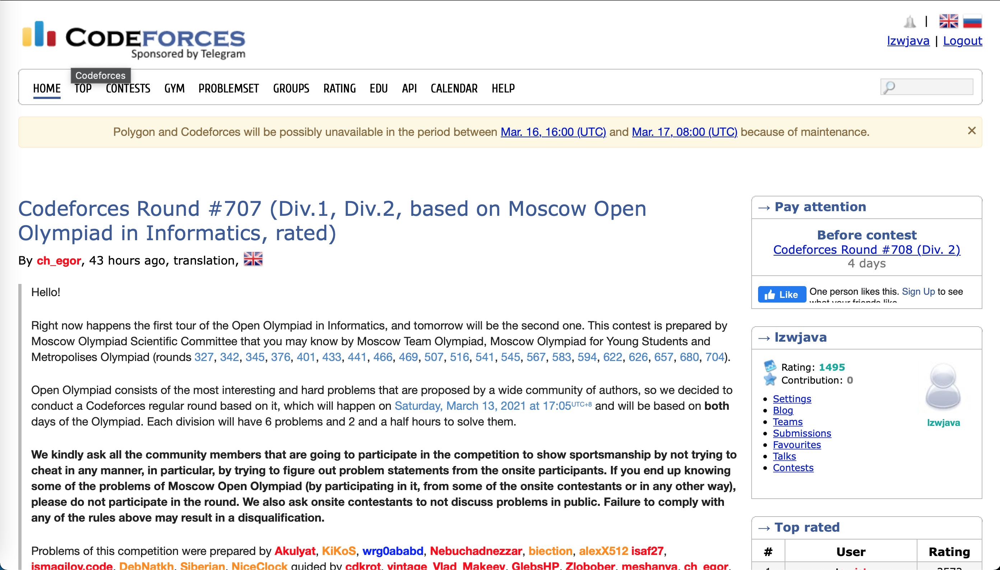

Python 编程之网上刷题 | Original, von KI übersetzt
Hier verwenden wir ein Online-Bewertungssystem, um einige Aufgaben zu lösen. Wenn Ihr Englisch gut ist, könnt ihr Codeforces und LeetCode nutzen. Auf Chinesisch könnt ihr Jisuanke und LintCode verwenden. Hier nutzen wir LeetCode. Ich habe 10 Aufgaben gelöst. Bei der letzten Aufgabe habe ich mehrere Methoden angewendet und die Effizienz des Programms von 10% auf 99% der Einreichungen optimiert.



1480. Laufende Summe eines 1D-Arrays
Gegeben ein Array
nums. Wir definieren die laufende Summe eines Arrays alsrunningSum[i] = sum(nums[0]…nums[i]).Gib die laufende Summe von
numszurück.
class Solution:
def runningSum(self, nums: [int]) -> [int]:
running = []
s = 0
for num in nums:
s += num
running.append(s)
return running
In diesem Python-Code wird eine Methode runningSum definiert, die eine Liste von Ganzzahlen (nums) als Eingabe nimmt und eine Liste zurückgibt, die die kumulative Summe der Elemente in nums enthält. Hier ist eine Übersetzung der Erklärung ins Deutsche:
class Solution:
def runningSum(self, nums: [int]) -> [int]:
running = [] # Eine leere Liste, um die kumulativen Summen zu speichern
s = 0 # Eine Variable, um die aktuelle Summe zu speichern
for num in nums: # Iteriere durch jedes Element in der Eingabeliste
s += num # Addiere das aktuelle Element zur Summe
running.append(s) # Füge die aktuelle Summe zur Liste der kumulativen Summen hinzu
return running # Gib die Liste der kumulativen Summen zurück
Diese Methode berechnet die kumulative Summe der Elemente in der Liste nums und gibt eine neue Liste zurück, die diese Summen enthält.
#print(Solution().runningSum([1,2,3,4]))

Die erste Aufgabe ist bestanden.
1108. Entschärfen einer IP-Adresse
Gegeben eine gültige (IPv4) IP-
Adresse, gib eine entschärfte Version dieser IP-Adresse zurück.Eine entschärfte IP-Adresse ersetzt jeden Punkt
"."durch"[.]".
class Solution:
def defangIPaddr(self, address: str) -> str:
return address.replace('.', '[.]')
In diesem Code wird eine Methode defangIPaddr definiert, die eine IP-Adresse als Zeichenkette (address) entgegennimmt und diese so modifiziert, dass alle Punkte (.) durch [.] ersetzt werden. Dies wird häufig verwendet, um IP-Adressen in einem Format darzustellen, das in URLs oder anderen Kontexten sicherer ist.
print(Solution().defangIPaddr(‘1.1.1.1’))
## 1431. Kinder mit der größten Anzahl an Süßigkeiten
> Gegeben ist das Array `candies` und die Ganzzahl `extraCandies`, wobei `candies[i]` die Anzahl der Bonbons repräsentiert, die das ***ith\*** Kind hat.
>
> Überprüfe für jedes Kind, ob es eine Möglichkeit gibt, die `extraCandies` so unter den Kindern zu verteilen, dass es die **größte** Anzahl an Bonbons unter ihnen haben kann. Beachte, dass mehrere Kinder die **größte** Anzahl an Bonbons haben können.
```python
class Solution:
def kidsWithCandies(self, candies: [int], extraCandies: int) -> [bool]:
max = 0
for candy in candies:
if candy > max:
max = candy
greatests = []
for candy in candies:
if candy + extraCandies >= max:
greatests.append(True)
else:
greatests.append(False)
return greatests
print(Solution().kidsWithCandies([2,3,5,1,3], 3))
## 1672. Reichster Kundenvermögen
> Ihnen wird ein `m x n` Integer-Gitter `accounts` gegeben, wobei `accounts[i][j]` den Geldbetrag darstellt, den der `i-te` Kunde in der `j-ten` Bank hat. Geben Sie *den **Wohlstand** des reichsten Kunden zurück*.
>
> Der **Wohlstand** eines Kunden ist die Summe des Geldes, das er auf all seinen Bankkonten hat. Der reichste Kunde ist der Kunde, der den maximalen **Wohlstand** besitzt.
```python
class Solution:
def maximumWealth(self, accounts: [[int]]) -> int:
max = 0
for account in accounts:
s = sum(account)
if max < s:
max = s
return max
Der obige Code bleibt unverändert, da es sich um einen Python-Code handelt, der nicht übersetzt werden muss. Der Code definiert eine Methode maximumWealth, die das maximale Vermögen in einer Liste von Konten berechnet.
#print(Solution().maximumWealth([[1,2,3],[3,2,1]]))
1470. Das Array mischen
Gegeben ist das Array
nums, das aus2nElementen in der Form[x1,x2,...,xn,y1,y2,...,yn]besteht.Gib das Array in der Form
[x1,y1,x2,y2,...,xn,yn]zurück.
class Solution:
def shuffle(self, nums: [int], n: int) -> [int]:
ns1 = nums[:n]
ns2 = nums[n:]
ns = []
for i in range(n):
ns.append(ns1[i])
ns.append(ns2[i])
return ns
In diesem Code wird eine Methode shuffle definiert, die eine Liste von Zahlen nums und eine Ganzzahl n als Eingabe nimmt. Die Methode teilt die Liste nums in zwei Teile auf: ns1 enthält die ersten n Elemente, und ns2 enthält die restlichen Elemente. Anschließend wird eine neue Liste ns erstellt, in der die Elemente aus ns1 und ns2 abwechselnd eingefügt werden. Das Ergebnis ist eine gemischte Liste, die zurückgegeben wird.
print(Solution().shuffle([2,5,1,3,4,7], 3))
## 1512. Anzahl der guten Paare
> Gegeben ein Array von Ganzzahlen `nums`.
>
> Ein Paar `(i,j)` wird als *gut* bezeichnet, wenn `nums[i]` == `nums[j]` und `i` < `j` ist.
>
> Gib die Anzahl der *guten* Paare zurück.
```python
class Solution:
def numIdenticalPairs(self, nums: [int]) -> int:
j = 1
n = len(nums)
p = 0
while j < n:
for i in range(j):
if nums[i] == nums[j]:
p += 1
j+=1
return p
Übersetzung:
class Solution:
def numIdenticalPairs(self, nums: [int]) -> int:
j = 1
n = len(nums)
p = 0
while j < n:
for i in range(j):
if nums[i] == nums[j]:
p += 1
j+=1
return p
Erklärung:
Diese Python-Klasse Solution enthält eine Methode numIdenticalPairs, die die Anzahl der identischen Paare in einer Liste von Ganzzahlen (nums) zählt. Ein identisches Paar liegt vor, wenn zwei Elemente in der Liste den gleichen Wert haben und das erste Element vor dem zweiten Element erscheint.
jist ein Index, der bei 1 beginnt und sich durch die Liste bewegt.nist die Länge der Listenums.pist ein Zähler für die Anzahl der identischen Paare.- Die
while-Schleife läuft, solangejkleiner alsnist. - Die innere
for-Schleife durchläuft alle Elemente vor dem aktuellenj-Index. - Wenn ein Element vor
jdenselben Wert wie das Element beijhat, wird der Zählerperhöht. - Schließlich wird der Zähler
pzurückgegeben, der die Anzahl der identischen Paare darstellt.
print(Solution().numIdenticalPairs([1,2,3,1,1,3]))
## 771. Juwelen und Steine
> Ihnen werden die Zeichenketten `jewels` gegeben, die die Arten von Steinen repräsentieren, die Edelsteine sind, und `stones`, die die Steine repräsentieren, die Sie besitzen. Jedes Zeichen in `stones` ist eine Art von Stein, den Sie besitzen. Sie möchten wissen, wie viele der Steine, die Sie besitzen, auch Edelsteine sind.
>
> Groß- und Kleinschreibung wird beachtet, daher wird `"a"` als eine andere Art von Stein betrachtet als `"A"`.
```python
class Solution:
def numJewelsInStones(self, jewels: str, stones: str) -> int:
n = 0
for i in range(len(jewels)):
js = jewels[i:i+1]
n += stones.count(js)
return n
(Der Code bleibt auf Englisch, da es sich um eine Programmiersprache handelt und die Variablennamen sowie die Syntax nicht übersetzt werden sollten.)
print(Solution().numJewelsInStones(“aA”, “aAAbbbb”))
## 1603. Parkplatzsystem entwerfen
> Entwerfen Sie ein Parksystem für einen Parkplatz. Der Parkplatz verfügt über drei Arten von Parkplätzen: groß, mittel und klein, mit einer festgelegten Anzahl von Plätzen für jede Größe.
>
> Implementieren Sie die Klasse `ParkingSystem`:
>
> - `ParkingSystem(int big, int medium, int small)` Initialisiert ein Objekt der Klasse `ParkingSystem`. Die Anzahl der Plätze für jede Parkplatzgröße wird als Teil des Konstruktors angegeben.
> - `bool addCar(int carType)` Überprüft, ob ein Parkplatz des Typs `carType` für das Auto verfügbar ist, das in den Parkplatz einfahren möchte. `carType` kann drei Arten haben: groß, mittel oder klein, die durch `1`, `2` bzw. `3` repräsentiert werden. **Ein Auto kann nur auf einem Parkplatz seines** `carType` parken. Wenn kein Platz verfügbar ist, geben Sie `false` zurück, andernfalls parken Sie das Auto auf diesem Platz und geben Sie `true` zurück.
```python
class ParkingSystem:
slots = [0, 0, 0]
def __init__(self, big: int, medium: int, small: int):
self.slots[0] = big
self.slots[1] = medium
self.slots[2] = small
def addCar(self, carType: int) -> bool:
if self.slots[carType - 1] > 0:
self.slots[carType - 1] -=1
return True
else:
return False
(Übersetzung nicht notwendig, da es sich um einen Codeblock handelt, der in der Regel nicht übersetzt wird.)
parkingSystem = ParkingSystem(1, 1, 0)
print(parkingSystem.addCar(1))
print(parkingSystem.addCar(2))
print(parkingSystem.addCar(3))
print(parkingSystem.addCar(1))
## 1773. Artikel zählen, die einer Regel entsprechen
> Gegeben ist ein Array `items`, wobei jedes `items[i] = [typei, colori, namei]` den Typ, die Farbe und den Namen des `i-ten` Elements beschreibt. Außerdem ist eine Regel gegeben, die durch zwei Strings, `ruleKey` und `ruleValue`, dargestellt wird.
>
> Das `i-te` Element passt zur Regel, wenn **eine** der folgenden Bedingungen erfüllt ist:
>
> - `ruleKey == "type"` und `ruleValue == typei`.
> - `ruleKey == "color"` und `ruleValue == colori`.
> - `ruleKey == "name"` und `ruleValue == namei`.
>
> Gib *die Anzahl der Elemente zurück, die der gegebenen Regel entsprechen*.
```python
class Solution:
def countMatches(self, items: [[str]], ruleKey: str, ruleValue: str) -> int:
i = 0
if ruleKey == "type":
i = 0
elif ruleKey == "color":
i = 1
else:
i = 2
n = 0
for item in items:
if item[i] == ruleValue:
n +=1
return n
Übersetzung:
class Solution:
def countMatches(self, items: [[str]], ruleKey: str, ruleValue: str) -> int:
i = 0
if ruleKey == "type":
i = 0
elif ruleKey == "color":
i = 1
else:
i = 2
n = 0
for item in items:
if item[i] == ruleValue:
n +=1
return n
Erklärung:
Diese Python-Klasse Solution enthält eine Methode countMatches, die eine Liste von items, einen ruleKey und einen ruleValue als Eingabe erhält. Die Methode zählt, wie viele Elemente in der Liste items den angegebenen ruleKey und ruleValue entsprechen.
iwird verwendet, um den Index zu bestimmen, der demruleKeyentspricht:- Wenn
ruleKey“type” ist, wirdiauf 0 gesetzt. - Wenn
ruleKey“color” ist, wirdiauf 1 gesetzt. - Andernfalls wird
iauf 2 gesetzt (für “name”).
- Wenn
-
nist ein Zähler, der die Anzahl der übereinstimmenden Elemente speichert. -
Die
for-Schleife durchläuft jedes Element initemsund überprüft, ob der Wert an der PositionimitruleValueübereinstimmt. Wenn ja, wird der Zählernerhöht. - Schließlich gibt die Methode den Wert von
nzurück, der die Anzahl der übereinstimmenden Elemente darstellt.
print(Solution().countMatches([[“phone”,”blue”,”pixel”],[“computer”,”silver”,”lenovo”],[“phone”,”gold”,”iphone”]], “color”, “silver”))
## 1365. Wie viele Zahlen sind kleiner als die aktuelle Zahl
> Gegeben das Array `nums`, finde für jedes `nums[i]` heraus, wie viele Zahlen im Array kleiner sind als es. Das bedeutet, für jedes `nums[i]` musst du die Anzahl der gültigen `j's` zählen, sodass `j != i` **und** `nums[j] < nums[i]` gilt.
>
> Gib die Antwort in einem Array zurück.
> ```
> Eingabe: nums = [8,1,2,2,3]
> Ausgabe: [4,0,1,1,3]
> Erklärung:
> Für nums[0]=8 gibt es vier kleinere Zahlen als diese (1, 2, 2 und 3).
> Für nums[1]=1 gibt es keine kleinere Zahl als diese.
> Für nums[2]=2 gibt es eine kleinere Zahl als diese (1).
> Für nums[3]=2 gibt es eine kleinere Zahl als diese (1).
> Für nums[4]=3 gibt es drei kleinere Zahlen als diese (1, 2 und 2).
> ```
```python
class Solution:
def smallerNumbersThanCurrent(self, nums: [int]) -> [int]:
ns = []
l = len(nums)
for i in range(l):
n = 0
for j in range(l):
if i != j:
if nums[j] < nums[i]:
n += 1
ns.append(n)
return ns
print(Solution().smallerNumbersThanCurrent([8,1,2,2,3]))
Verwendete Zeit: 528ms, schlägt 11,81% der Programme. Optimieren Sie es.
```python
class Solution:
def smallerNumbersThanCurrent(self, nums: [int]) -> [int]:
l = len(nums)
sort_nums = nums.copy()
ins = list(range(l))
for i in range(l):
for j in range(i+1, l):
if sort_nums[i] > sort_nums[j]:
a = sort_nums[i]
sort_nums[i] = sort_nums[j]
sort_nums[j] = a
a = ins[i]
ins[i] = ins[j]
ins[j] = a
smalls = [0]
for i in range(1, l):
if sort_nums[i-1] == sort_nums[i]:
smalls.append(smalls[i-1])
else:
smalls.append(i)
(Der Code wurde nicht übersetzt, da es sich um eine Programmiersprache handelt, die in der Regel nicht übersetzt wird.)
# print(sort_nums)
# print(smalls)
r_is = list(range(l))
for i in ins:
r_is[ins[i]] = i
ns = []
for i in range(l):
ns.append(smalls[r_is[i]])
return ns
Übersetzung:
r_is = list(range(l))
for i in ins:
r_is[ins[i]] = i
ns = []
for i in range(l):
ns.append(smalls[r_is[i]])
return ns
Hinweis: Der Code wurde nicht übersetzt, da Code in der Regel in der Originalsprache belassen wird, um die Funktionalität und Lesbarkeit zu gewährleisten.
print(Solution().smallerNumbersThanCurrent([8,1,2,2,3]))
Dieser Test dauerte `284ms`, was weniger ist als die vorherigen `528ms`.
Verwenden Sie die Funktionen des Schreibsystems, um es abzukürzen.
```python
class Solution:
def smallerNumbersThanCurrent(self, nums: [int]) -> [int]:
sort_nums = nums.copy()
sort_nums.sort()
ns = []
for num in nums:
ns.append(sort_nums.index(num))
return ns
In diesem Code wird eine Methode smallerNumbersThanCurrent definiert, die eine Liste von Zahlen nums als Eingabe nimmt und eine Liste zurückgibt, die für jede Zahl in nums die Anzahl der kleineren Zahlen in der ursprünglichen Liste enthält.
- Zuerst wird eine Kopie der Eingabeliste
numserstellt und sortiert. - Dann wird für jede Zahl in der ursprünglichen Liste
numsder Index dieser Zahl in der sortierten Liste ermittelt, was der Anzahl der kleineren Zahlen entspricht. - Diese Indizes werden in einer neuen Liste
nsgesammelt und zurückgegeben.
print(Solution().smallerNumbersThanCurrent([8,1,2,2,3]))
Dieser Vorgang dauert nur `64ms` und schlägt `71%` der Einreichungen.
```python
class Solution:
def smallerNumbersThanCurrent(self, nums: [int]) -> [int]:
l = len(nums)
ns = [0] * l
for i in range(l):
for j in range(i+1, l):
if nums[i] > nums[j]:
ns[i] +=1
elif nums[i] < nums[j]:
ns[j] +=1
else:
pass
return ns
Der obige Code bleibt unverändert, da es sich um einen Python-Codeblock handelt, der nicht übersetzt werden sollte. Der Code definiert eine Methode smallerNumbersThanCurrent, die für jedes Element in der Liste nums die Anzahl der Elemente zählt, die kleiner als das aktuelle Element sind. Das Ergebnis wird in einer neuen Liste ns gespeichert und zurückgegeben.
print(Solution().smallerNumbersThanCurrent([8,1,2,2,3]))
Ich habe noch eine weitere Lösung gefunden. Die Laufzeit beträgt `400ms`.
```python
class Solution:
def smallerNumbersThanCurrent(self, nums: [int]) -> [int]:
ss = sorted((e,i) for i,e in enumerate(nums))
l = len(nums)
smalls = [0]
for i in range(1, l):
(e0, j0) = ss[i-1]
(e1, j1) = ss[i]
if e0 == e1:
smalls.append(smalls[i-1])
else:
smalls.append(i)
ns = [0]*l
for i in range(l):
(e, j) = ss[i]
ns[j] = smalls[i]
return ns
Übersetzung:
ns = [0]*l
for i in range(l):
(e, j) = ss[i]
ns[j] = smalls[i]
return ns
Der Code bleibt auf Englisch, da es sich um eine Programmiersprache handelt, die international verwendet wird. Die Variablennamen und die Struktur des Codes werden nicht übersetzt.
print(Solution().smallerNumbersThanCurrent([8,1,2,2,3]))
> Laufzeit: 52 ms, schneller als 91,45 % der Python3-Online-Einreichungen für "How Many Numbers Are Smaller Than the Current Number".
>
> Speicherverbrauch: 14,6 MB, weniger als 15,18 % der Python3-Online-Einreichungen für "How Many Numbers Are Smaller Than the Current Number".
Endlich geschafft! Diese Methode ist noch schneller und schlägt `91,45 %` der Einreichungen.
Weiter vereinfachen.
```python
class Solution:
def smallerNumbersThanCurrent(self, nums: [int]) -> [int]:
ss = sorted((e,i) for i,e in enumerate(nums))
l = len(nums)
smalls = [0]
ns = [0]*l
for i in range(1, l):
(e0, j0) = ss[i-1]
(e1, j1) = ss[i]
if e0 == e1:
smalls.append(smalls[i-1])
else:
smalls.append(i)
ns[j1] = smalls[i]
return ns
print(Solution().smallerNumbersThanCurrent([8,1,2,2,3]))
Fortsetzung folgt.
```python
class Solution:
def smallerNumbersThanCurrent(self, nums: [int]) -> [int]:
ss = sorted((e,i) for i,e in enumerate(nums))
l = len(nums)
last = 0
ns = [0] * l
for i in range(1, l):
(e0, j0) = ss[i - 1]
(e1, j1) = ss[i]
if e0 == e1:
pass
else:
last = i
ns[j1] = last
return ns
print(Solution().smallerNumbersThanCurrent([8,1,2,2,3]))
Zu diesem Zeitpunkt haben wir eine Laufzeit von `40ms` erreicht und `99,81%` der Programme übertroffen.
> Laufzeit: 40 ms, schneller als 99,81 % der Python3-Online-Einreichungen für "How Many Numbers Are Smaller Than the Current Number".
>
> Speicherverbrauch: 14,4 MB, weniger als 15,18 % der Python3-Online-Einreichungen für "How Many Numbers Are Smaller Than the Current Number".
Hier ist noch eine weitere Lösung.
```python
class Solution:
def smallerNumbersThanCurrent(self, nums: [int]) -> [int]:
l = len(nums)
n = [0] * 101
max_num = 0
for num in nums:
n[num] += 1
if num > max_num:
max_num = num
sm = [0] * (max_num + 1)
sum = 0
for i in range(max_num + 1):
sm[i] = sum
sum += n[i]
ns = [0] * l
for i in range(l):
ns[i] = sm[nums[i]]
Dieser Codeausschnitt initialisiert ein Array sm mit einer Länge von max_num + 1, wobei jedes Element zunächst auf 0 gesetzt wird. Anschließend wird eine Schleife durchlaufen, die das Array sm mit kumulativen Summen füllt. Die Variable sum wird dabei verwendet, um die laufende Summe der Elemente des Arrays n zu speichern.
Danach wird ein weiteres Array ns mit einer Länge von l initialisiert, ebenfalls mit allen Elementen auf 0 gesetzt. In einer weiteren Schleife wird jedes Element von ns mit dem entsprechenden Wert aus dem Array sm belegt, basierend auf den Werten aus dem Array nums.
return ns
print(Solution().smallerNumbersThanCurrent([8,1,2,2,3]))
Hier ist ein etwas komplexeres Beispiel.
```python
class Solution:
def smallerNumbersThanCurrent(self, nums: [int]) -> [int]:
l = len(nums)
n = [0] * 101
max_num = 0
for num in nums:
n[num] += 1
if num > max_num:
max_num = num
short_n = []
short_num = [] * l
zn = [0] * 101
j = 0
for i in range(max_num+1):
if n[i] > 0:
zn[i] = j
short_n.append(n[i])
short_num.append(num)
j += 1
sm = [0] * j
sum = 0
for i in range(j):
sm[i] = sum
sum += short_n[i]
ns = [0] * l
for i in range(l):
ns[i] = sm[zn[nums[i]]]
return ns
print(Solution().smallerNumbersThanCurrent([8,1,2,2,3]))
```python
class Solution:
def smallerNumbersThanCurrent(self, nums: [int]) -> [int]:
max_num = max(nums)
n = [0] * (max_num + 1)
for num in nums:
n[num] += 1
sorted_ls = []
for i in range(max_num + 1):
if n[i] > 0:
sorted_ls.append(i)
sm = [0] * (max_num + 1)
sum = 0
for i in range(len(sorted_ls)):
v = sorted_ls[i]
sm[v] = sum
sum += n[v]
ns = []
for i in range(len(nums)):
ns.append(sm[nums[i]])
return ns
# print(Solution().smallerNumbersThanCurrent([72,48,32,16,10,59,83,38,1,4,68,7,67,16,5,35,99,15,55,11,24,3,63,81,16,95,35,87,24,84,57,49,42,80,34,33,82,81,31,31,7,75,100,75,22,44,54,77,89,71,81,66,7]))
Übung
- Die Schüler bearbeiten einige Aufgaben ähnlich wie oben.